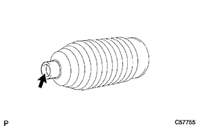
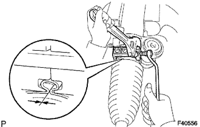
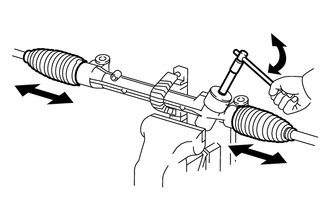

RM3140CG
_55
转向
_023997
转向机/转向传动机构
_0117159
转向机
A
转向机/转向传动机构 转向机 重新装配
程序
 1.安装转向齿条 2 号防尘套
1.安装转向齿条 2 号防尘套
a.

在新的转向齿条 2 号防尘套小孔内侧涂抺锂皂基乙二醇润滑脂。
b.
将转向齿条 2 号防尘套安装到齿条外壳的凹槽上。
- 备注：
- ·
小心不要损坏或扭曲转向齿条 2 号防尘套。
·确保防尘套上没有生锈和异物。
2.安装转向齿条 1 号防尘套
- 提示：
-
执行与转向齿条 2 号防尘套相同的程序。
3.安装转向齿条防尘套卡夹（左侧）
a.

1.938,0.885 1.281,0.219
1.281,0.219 1.083,0.219
false
0.823,0.156 1.385,0.438
0.563,0.281
10
false
SST
如图所示，用 SST 安装新转向齿条防尘套卡夹。
- SST
- 09521-24010
- 间隙:
3.0 mm (0.118 in.) 或更小
- 备注：
-
小心不要损坏转向齿条 2 号防尘套。
4.安装转向齿条防尘套卡夹（右侧）
- 提示：
-
执行与左侧相同的程序。
5.安装转向齿条防尘套卡子（左侧）
a.
用钳子安装转向齿条防尘套卡子。
6.安装转向齿条防尘套卡子（右侧）
- 提示：
-
执行与左侧相同的程序。
7.检查转向机总成
a.

1.594,0.333 2.042,0.333
2.042,0.333 2.417,0.677
false
1.271,0.25 1.729,0.448
0.458,0.198
10
SST
使用 SST 转动小齿轮轴以查看左侧和右侧转向齿条防尘套是否扩张且缓慢收缩。
- SST
- 09616-00011
如果左侧和右侧转向齿条防尘套不扩张和缓慢收缩，则使用新的转向齿条防尘套卡夹并重新安装转向齿条防尘套。